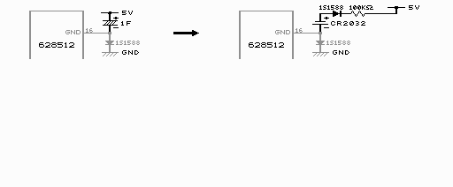
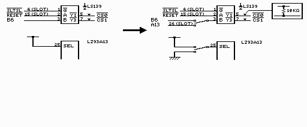

付録３ さらなる改造
ここでは、更なる改造のヒントを書いておきます。ちょっと不親切な書き方ですが、付録ですので大目に見てやって下さい。
１ リチウム電池を使う
ゴールドキャパシタ等の電気二重層コンデンサが手に入らない場合や、電池の方が良いという方は、リチウム電池を使いましょう。リチウム電池はCR2032などを使います。その場合の取り付け方はゴールドキャパシタとほぼ同じですが、電池の＋側と基板の5Vをつなぐ部分にダイオード（1S1588）と1〜100KΩの抵抗を挿入します。ダイオードのラインが入っている側を基板の5Vにつなぎます。
つまり、ゴールドキャパシタをダイオード＋抵抗＋リチウム電池を直列につないだものと置き換えるわけです。リチウム電池は化学的に激しいもので＋と−がショートすると大変危険です。そこで、基板のどこかで5V（＋）とGND（−）がショートしても悲劇的なことにならないように抵抗を付けておく訳です。電池は外れないようにしっかり固定しましょう。
電気二重層コンデンサの場合は、コンデンサの内部インピーダンスが大きいので抵抗を付ける必要はありません。

２ 16kバンク対応改造
似非RAMでは、MGLOAD.COM＆MGSAVE.COMを使う事により、メガROMゲームをロードして遊ぶことができます。しかし、似非RAMディスクは8kバンクで動作しているため、似非RAMではアスキーのメガROMコントローラを使ったゲームの内、8kバンクで切り替えているものしか遊べません。そこで、似非RAMを16kバンクでも切り替えられるように改造すれば、16kバンク切り替えのゲームも遊べるわけです。MGSAVEでメガROMゲームをファイル化する時に、xx*??(h)Banksなどと表示されます。 xxの部分が16のものが16kバンクのソフトです。
実際には16kバンク切り替えのゲームにパッチを当てて、8kバンク切り替えの似非RAMで動作させるパッチも存在しているので、もうこんな改造をする人はいないでしょう。あくまで研究用としてお読みください。
似非RAMは8kのバンク切り替えのハードです。8kバンク切り替えではスロットからのアドレス信号 A0〜A12とメガROMコントローラからの拡張アドレス信号B0〜Bx（MA13〜MA13+x）を使ってSRAMを制御しています。 Bxのxは使っているSRAMの数によります。16kバンク切り替えでは同容量のSRAMを制御するのに、アドレス信号 A0〜A13とB0〜Bx-1（MA14〜MA14+x-1）を使います。つまり、使われている最上位の拡張アドレス信号の代わりに A13をSRAM制御に使用すればいいわけです。
また、メガROMコントローラを16kバンク切り替えで使う為に、SEL信号をGNDにしなければなりません。SELは8kバンク切り替えの時は5Vになっています。つまり、アドレス信号の切り替えとバンクサイズセレクト信号（SEL）の切り替えで２つのスイッチが必要になります。
ここではSRAMが2個（1024MB）の場合を例にとって説明します。使われている最上位の拡張アドレス信号はB6です。 B6はLS139の3ピンに繋がっていると思います。
6pスイッチ
×１個を用意します。6pスイッチは3pスイッチ×２個をまとめたもので、3pスイッチ2個分の信号をまとめて切り替えられます。まず、B6(LZ93A13では30ピン)とLS139の3ピンが繋がっているので、それを切り離します。また、SEL(LZ93A13の25ピン)も5Vと繋がっているのでそれも切り離します。そして以下のようにスイッチを取り付けます。
左の足 真ん中の足 右の足
アドレス信号 B6(LZ93A13) 30ピン(LS139) A13(SLOT)
バンクサイズ信号 5V SEL (LZ93A13) GND
こうすると、スイッチが左で8kバンク、右で16kバンクになります。アドレス信号とバンクサイズ信号両方が一度に切り替わります。
中点ＯＦＦスイッチを使った場合、両方の真ん中の足に10ｋΩの抵抗をつけてプルアップしておく（5Vと繋ぐ）と、スイッチが真ん中（OFF）でSRAMが切り離しもどきになります。スイッチOFFだとLS139の3ピンがプルアップのお蔭で5Vとなり、4000hに後半512kBの先頭が出るので'AB'が書かれていない見込みが高く、起動しないという訳です。トリッキーです。スイッチが真ん中の時にSELは5Vにしておく為に、SELもプルアップしておきます。その場合、左の足に入れている5Vは入れなくても構いません。スイッチが左のときもプルアップのお蔭で5Vになるからです。
似非RAMを読み書きするときは、読み書きするデータに合わせてバンクサイズを切り替えてから読み書きしてください。似非RAMディスクは8kバンクで動作するので、8kバンクにしてからMGINSTをしなければなりませんし、ディスクとして読み書きする際も当然8kバンクにしておかないとディスクの内容を壊してしまいます。同じように、16kバンクのゲームを遊ぶ際に8kバンクで書き込んでから16kバンクに切り替えても遊べません。

 次へ
次へ